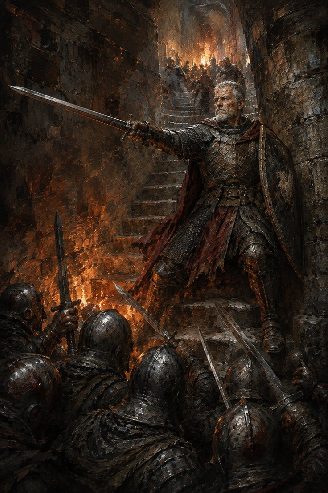

Record 1 of 15
The second stair
On the night Vahlreth falls Gero takes the second stair and simply refuses to let the first man through the door. It costs the duke's men four full minutes and him everything he has left, while Hildegund, three syllables unsaid behind her teeth, runs on.
A grey-bearded old guard in scaled mail with a torn red cloak stands braced on a narrow stone stair with a dented shield on his left arm and a long sword thrust out toward a crowd of helmeted soldiers pressing up at the lower left, their raised swords catching an orange glow, more torch-lit helmets receding up the curving stairwell behind him.